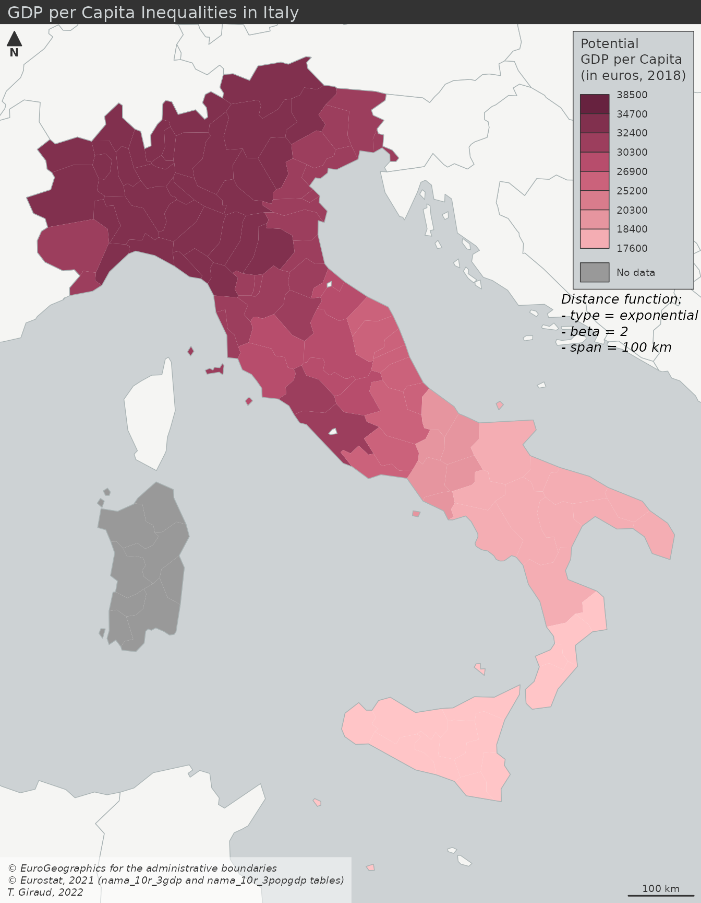

The Stewart model is a spatial interaction modeling approach which aims to compute indicators based on stock values weighted by distance. These indicators have two main interests:
This functional semantic simplification may help to show a smoothed context-aware picture of the localized socio-economic activities.
In this vignette, we show a use case of these potentials on the regional GDP per capita in Italy with three maps:
library(eurostat)
library(giscoR)
library(potential)
library(mapsf)
library(sf)
# Data download from Eurostat
gdp_raw <- get_eurostat('nama_10r_3gdp')
pop_raw <- get_eurostat('nama_10r_3popgdp')
# Selection of the relevant rows and columns
pop <- pop_raw[nchar(pop_raw$geo)==5 &
pop_raw$time == "2018-01-01", ]
names(pop)[4] <- "pop"
pop$pop <- pop$pop * 1000
gdp <- gdp_raw[nchar(gdp_raw$geo)==5 &
gdp_raw$time == "2018-01-01" &
gdp_raw$unit == "MIO_EUR", ]
names(gdp)[4] <- "gdp"
gdp$gdp <- gdp$gdp * 1000000
# Base maps download from GISCO
countries <- gisco_get_countries()
nuts_raw <- gisco_nuts
nuts <- nuts_raw[nuts_raw$LEVL_CODE == 3 &
nuts_raw$CNTR_CODE == "IT", ]
nuts <- st_transform(nuts, 3035)
countries <- st_transform(countries, 3035)
# Join between base map and dataset
nuts <- merge(nuts, pop[,c("geo", "pop")], by.x = "NUTS_ID", by.y = "geo", all.x = T)
nuts <- merge(nuts, gdp[,c("geo", "gdp")], by.x = "NUTS_ID", by.y = "geo", all.x = T)
# Compute the GDP per capita
nuts$gdp_hab <- nuts$gdp / nuts$pop
# Set Breaks
bv <- quantile(nuts$gdp_hab, seq(from = 0, to = 1, length.out = 9))
# Set a color palette
pal <- mf_get_pal(n = 9, palette = "Burg", rev = TRUE)
# Set the credit text
cred <- paste0("© EuroGeographics for the administrative boundaries\n",
"© Eurostat, 2021 (nama_10r_3gdp and nama_10r_3popgdp tables)\n",
"T. Giraud, 2022")
# Draw the basemap
mf_theme(bg = "#cdd2d4", mar = c(0,0,1.2,0), tab = FALSE)
mf_init(nuts)
mf_map(countries, col = "#f5f5f3ff", border = "#a9b3b4ff", add = TRUE)
# Map the regional GDP per capita
mf_map(x = nuts, var = "gdp_hab", type = "choro",
leg_pos = "topright",
breaks = bv,
pal = pal,
border = NA,
leg_frame = TRUE,
leg_title = "GDP per Capita\n(in euros, 2018)",
leg_val_rnd = -2,
add = TRUE)
mf_map(countries[countries$ISO3_CODE == "ITA", ],
col = NA, border = "#a9b3b4ff", add = TRUE)
# Set a layout
mf_arrow("topleft")
mf_title(txt = "GDP per Capita Inequalities in Italy")
mf_scale(100)
mf_credits(txt = cred, bg = "#ffffff80")We compute the potentials of GDP for each spatial unit. The computed value takes into account the spatial distribution of the stock variable and return a sum weighted by distance, according a specific spatial interaction and fully customizable function.
# Create a distance matrix between units
nuts_pt <- nuts
st_geometry(nuts_pt) <- st_centroid(st_geometry(nuts_pt))
d <- create_matrix(nuts_pt, nuts_pt)
# Compute the potentials of population and GDP per units
# function = exponential, beta = 2, span = 100 km
pot <- potential(x = nuts_pt,
y = nuts_pt,
d = d,
var = c("pop", "gdp"),
fun = "e",
beta = 2,
span = 100000)
# Compute the potential GDP per capita
nuts$gdp_hab_pot <- pot[, 2] / pot[, 1]
# Set breaks
bv2 <- c(min(nuts$gdp_hab_pot), bv[2:8], max(nuts$gdp_hab_pot))
# Draw the basemap
mf_init(nuts)
mf_map(countries, col = "#f5f5f3ff", border = "#a9b3b4ff", add = TRUE)
# Map the regional GDP per capita
mf_map(x = nuts, var = "gdp_hab_pot", type = "choro",
leg_pos = "topright",
breaks = bv2,
pal = pal,
border = NA,
leg_title = "Potential\nGDP per Capita\n(in euros, 2018)",
leg_frame = TRUE,
leg_val_rnd = -2,
add = TRUE)
mf_map(countries[countries$ISO3_CODE == "ITA", ],
col = NA, border = "#a9b3b4ff", add = TRUE)
# Set a layout
mf_arrow("topleft")
mf_title(txt = "GDP per Capita Inequalities in Italy")
mf_scale(100)
mf_credits(txt = cred, bg = "#ffffff80")
# Set a text to explicit the function parameters
text(x = 4873429, y = 2308495, xpd = TRUE,
labels = paste0("Distance function:\n",
"- type = exponential\n",
"- beta = 2\n",
"- span = 100 km"),
cex = 0.8, adj = 0, font = 3)
This map gives a smoothed picture of the spatial patterns of GDP per capita in Italy while keeping the original spatial units as interpretive framework. Hence, the map reader can still rely on a known territorial division to develop its analyses.
In this case, the potential GDP per capita is computed on a regular grid.
# Compute the potentials of population on a regular grid (10km resolution)
g <- create_grid(x = nuts, res = 10000)
d <- create_matrix(nuts_pt, g)
# function = exponential, beta = 2, span = 75 km
pot2 <- potential(x = nuts_pt,
y = g,
d = d,
var = c("pop", "gdp"),
fun = "e",
beta = 2,
span = 100000)
# Create the ratio variable
g$gdp_hab_pot <- pot2[, 2] / pot2[, 1]
# Create an isopleth layer
equipot <- equipotential(x = g, var = "gdp_hab_pot", breaks = bv, mask = nuts)
# Get breaks values
bv3 <- sort(c(unique(equipot$min), max(equipot$max)), decreasing = FALSE)
# Draw the basemap
mf_init(nuts)
mf_map(countries, col = "#f5f5f3ff", border = "#a9b3b4ff", add = TRUE)
# Map the regional GDP per capita
mf_map(x = equipot, var = "center", type = "choro",
leg_pos = "topright",
breaks = bv3,
pal = pal,
border = NA,
leg_title = "Potential\nGDP per Capita\n(in euros, 2018)",
leg_frame = TRUE,
leg_val_rnd = -2,
add = TRUE)
mf_map(countries[countries$ISO3_CODE == "ITA", ],
col = NA, border = "#a9b3b4ff", add = TRUE)
# Set a layout
mf_arrow("topleft")
mf_title(txt = "GDP per Capita Inequalities in Italy")
mf_scale(100)
mf_credits(txt = cred, bg = "#ffffff80")
# Set a text to explicit the function parameters
text(x = 4873429, y = 2308495, xpd = TRUE,
labels = paste0("Distance function:\n",
"- type = exponential\n",
"- beta = 2\n",
"- span = 100 km"),
cex = 0.8, adj = 0, font = 3)Unlike the previous maps, this one doesn’t keep the initial territorial division to give a smoothed picture of the spatial patterns of GDP per capita in Italy. The result is easy to read and can be considered as a bypassing of the Modifiable Areal Unit Problem (MAUP).